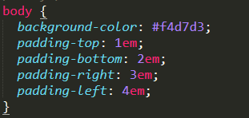

Estructura de CSS
La estructura completa es llamada regla predeterminada (pero a menudo «regla» para abreviar).
Nota también los nombres de las partes individuales:
Selector
El elemento HTML en el que comienza la regla. Esta selecciona el(los) elemento(s) a dar estilo
(en este caso, los elementos
). Para dar estilo a un elemento diferente, solo cambia el selector.
Declaración
Una sola regla como color: red; especifica a cuál de las propiedades del elemento quieres dar estilo.
Propiedades
Maneras en las cuales puedes dar estilo a un elemento HTML. (En este caso, color es una propiedad
del elemento
). En CSS, seleccionas qué propiedad quieres afectar en tu regla.
Valor de la propiedad
A la derecha de la propiedad, después de los dos puntos (:), tienes el valor de la propiedad, para
elegir una de las muchas posibles apariencias para una propiedad determinada (hay muchos valores para
color además de red).
Nota las otras partes importantes de la sintaxis:
1. Cada una de las reglas (aparte del selector) deben estar encapsuladas entre llaves ({}).
2. Dentro de cada declaración, debes usar los dos puntos (:) para separar la propiedad de su valor.
3. Dentro de cada regla, debes usar el punto y coma (;) para separar una declaración de la siguiente.
De este modo para modificar varios valores de propiedad a la vez, solo necesitas escribirlos separados por
punto y coma (;), así:
Tipos de selectores
Selectores
Veamos ahora cuáles son los selectores básicos que podemos utilizar en CSS.
Selector universal
Sintaxis: * { atributo:valor; }
Ejemplo:* { color: grey; }/* El estilo se aplicará a todos los elementos de la página*/
Selector etiqueta
Sintaxis: etiqueta { atributo:valor }
Ejemplo: p {color: green;} /* El estilo se aplicará a todos los elementos
.*/
Selector clase
Sintaxis: .clase { atributo:valor }
Ejemplo: .index {color: red;} /* El estilo se aplicará a cualquier elemento que tenga la clase .index*/
Selector identificador
El selector identificador utiliza el atributo id para seleccionar un elemento. Solo puede haber un elemento
con un id dado en un documento.
Sintaxis: #id { atributo:valor }
Ejemplo: #cent {color: blue;} /* El estilo se aplicará al elemento que tenga el id #cent */
Selector descendiente
Un elemento es descendiente de otro cuando se encuentra entre las etiquetas de apertura y de cierre del elemento
padre. Su sintaxis
es: selector1 selector2… slectorN. Siendo el selector N el elemento sobre el que se aplica el estilo.
selector1 selector2 selectorN{
propiedad: valor;
}
Combinación de selectores
La combinación de selectores nos permite dar un estilo a todos los selectores indicados.
selector1, selector2, selector3{
propiedad: valor;
}
Selector de hijos
Se usa para seleccionar un elemento que es hijo de otro elemento y se indica mediante el signo “mayor que” (>).
selector1 > selector2{
propiedad: valor;
}
Selector adyacente
Se usa para seleccionar elementos que son hermanos, es decir, su elemento padre es el mismo y están seguidos
en el código HTML. Se indica mediante el signo “más” (+).
selector1 + selector2{
propiedad: valor;
}
Elementos de línea y de bloque
Todas las etiquetas del lenguaje HTML se pueden clasificar en etiquetas de línea o de bloque.
Una etiqueta de línea es aquella que ocupa el espacio mínimo necesario en horizontal, y permite que otro
elemento se coloque a su lado. En cambio una etiqueta de bloque, ocupa todo el ancho disponible y no permite
que otro elemento se coloque a su lado (aunque aparentemente tenga lugar suficiente).
Etiquetas de línea (las más usadas):
Negrita:
Cursiva:
Subrayado:
Pequeña:
Superindice
Subindice
|
< B>…< /B>
< I>…< /I>
< U>…< /U>
< SMALL>…< /SMALL>
< SUP>…< /SUP>
< SUB >…< /SUB >
|
Etiquetas de bloque (las más usadas):
< h1>, < h2>, < h3>, < p>, < ul>, < li>, < div>, < header>, < section>,
< article>, < footer>, < form>, < table>
algunos ejemplos
form
Formulario de entrada.
H de encabezamiento
Niveles de cabecera 1-6.
< h1>, < h2>, < h3>, < h4>, < h5>, < h6>
Encabezamiento con h1
Encabezamiento con h2
Encabezamiento con h3
Encabezamiento con h4
Encabezamiento con h5
Encabezamiento con h6
¿Qué es el modelo de cajas en CSS?
El modelo de cajas o "box model" es seguramente la característica más importante
del lenguaje de hojas de estilos CSS, ya que condiciona el diseño de todas las
páginas web. El modelo de cajas es el comportamiento de CSS que hace que todos
los elementos de las páginas se representen mediante cajas rectangulares.
ejemplo:
